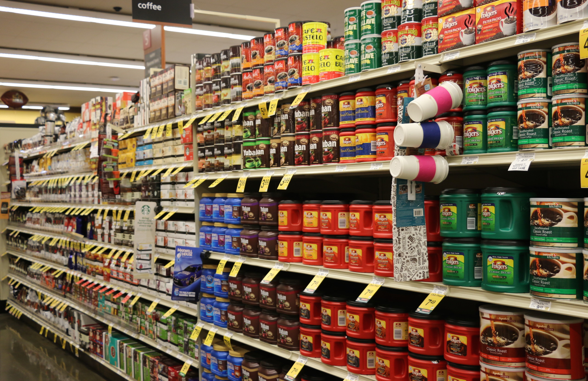

Decision Analytics
Optimizing an ESG-Conscious Race Calendar for Formula One
In 2019, the FIA committed to net zero carbon emissions for race operations
by 2030. However, considering the total travel emissions during the 2019 season amounted to over
115,000 kg tonnes of CO2, efforts can be made to significantly reduce F1' carbon footprints
within a much shorter timeframe. In this project, a new F1 race calendar was scheduled in such a way that minimized
CO2 emitted from travel by 58%, increased revenue from hosting cities by 17%, and maintained fan satisfaction
from the 2019 season levels.
Tools Used: Python, Gurobi, Jupyter Notebook, Excel
Skills Practiced: Data Modelling, Data Collection, Optimization
Classification with NLP
Restoring Twitter Ad Revenue with NLP

Recent changes to Twitter's user policy has resulted in an increase of negative content being posted to the platform. As a result, advertisers have been
deterred from marketing their products on the site, driving down Twitter's ad revenues. Using NLP, this project proposes and builds two models to police hate speech and monitor post sentiment to facilitate a safer user experience and encourage advertisers to return.
Tools Used: Python, Jupyter Notebook
Skills Practiced: Data Modelling, Classification, NLP
Dashboarding with Power BI
Year to Year Sales Comparison Dashboard

This dashboard represents a simple exercise in data visualization. Here, Power BI is used to build a dashboard to compare ABC Inc.'s
sales between 2014 and 2018. The dashboard uses various visuals to display insights, DAX code to calculate key metrics and KPI's, and has a custom template designed in Figma
Tools Used: Power BI, Figma
Skills Practiced: Data visualization, Business Intelligence, Graphic Design
Machine Learning in Python
Organizing A Successful
KickStarter Campaign
Kickstarter is a popular online platform where users can market charitable campaigns or entrepreneurial projects to raise funding.
In this project, we develop two machine learning models. The first is a classification model to predict whether
a given fundraising campaign will a success or failure. The second is a clustering algorithm to determine how many days a fundraising campaign should last to reach its target amount.
Tools Used: Python, Jupyter Notebook
Skills Practiced: Machine Learning, Classification, Clustering
Revenue Management with Analytics
Optimizing Promotions for Supermarkets

Revenue management is a pivotal aspect to any retail business, be it a big-box store or mom & pop shop. For grocery stores in particular,
promotional pricing is a difficult and essential art to master. The model in this project predicts the demand for a grocer's coffee brand in order to help the store manager decide whether or not offer a discount on the item
and the amount by which it should be discounted.
Tools Used: Python, Jupyter Notebook
Skills Practiced: Regression, Predictive Analytics, Microeconomics
Sports Analytics
When Will Erling Haaland Stop Scoring?

Erling Haaland has been nothing short of a phenomenon in the sport of soccer. The young star has scored in 55% of his games in the first first years
of his career, an achievement that eclipses both Messi and Ronaldo. In this project, various classification algorithms are built and tested to predict in When-Will-Erling-Haaland-Stop-Scoring
games Haaland is most likely to score. The coefficients of the best performing algorithm are then used to identify the factors of a game that contribute to the likelihood of Haaland scoring.
Tools Used: Python, Scikit-Learn
Skills Practiced: Data Exploration, Data Modeling, Machine Learning
Data Exploration with SQL
Profiling Customers of E-Commerce Sales

This projet represents a simple data exploration exercise in SQL for the purpose of business intelligence. A large database of online transactions, customer information, and product descriptions
are manipulated to extract insights and trends according to the
stipulations outlined in the mandate. Doing so provides a deeper understanding of the business' operations and performance
Tools Used: SQL, MYSQL Workbench
Skills Practiced: Data Exploration, Database Management, Business Intelligence